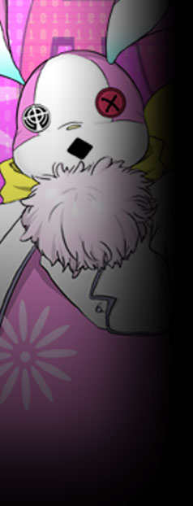
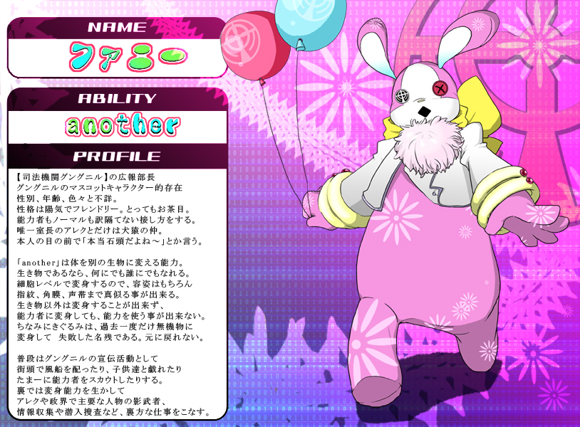
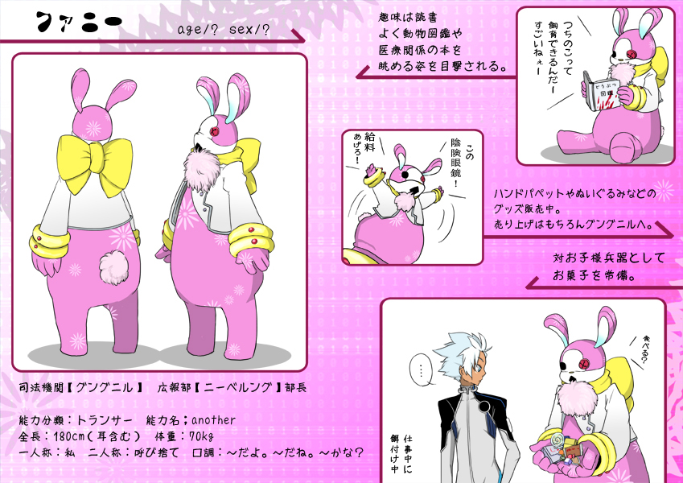
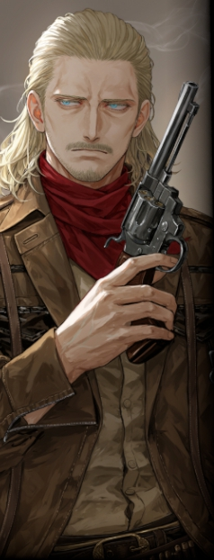

ユグドラシルにおける公共放送局。
そして上層におけるメディアの最先端でもある。
そして上層におけるメディアの最先端でもある。
ＴＶ・ラジオ・新聞・電脳世界でのメディア展開を広く・多く担っている。
一般市民へのイベント・広報活動や慈善活動を行っている為、人気は上々。
反面、地位が高い者にほど（スキャンダル的な意味で）嫌われている。
一般市民へのイベント・広報活動や慈善活動を行っている為、人気は上々。
反面、地位が高い者にほど（スキャンダル的な意味で）嫌われている。
セントラルタワー中階に拠点を置く。
▼諜報部【 ラインゴールド 】
……その実態はユグドラシルの情報統制機関。
電脳ネットワークの監視などによる電脳犯罪の抑止、
情報の事前調査などによる治安維持部隊グレイプニルのバックアップ、
反政府勢力の情報管理も行う。
電脳ネットワークの監視などによる電脳犯罪の抑止、
情報の事前調査などによる治安維持部隊グレイプニルのバックアップ、
反政府勢力の情報管理も行う。
所属ルートとしては広報部からの異動や、ＹＤＦからの引き抜きが主。
逆に、【ラインゴールド】での活動に陰りが出たため広報部へ戻る者もいる。
逆に、【ラインゴールド】での活動に陰りが出たため広報部へ戻る者もいる。
【グングニル】の目と耳であり、ラグナロク事件においてもグレイプニルの後方支援で大いに活躍した。
なお、活動内容や縄張りの重複からＹＤＦの公安部とはいがみ合うことも多い。
なお、活動内容や縄張りの重複からＹＤＦの公安部とはいがみ合うことも多い。
原典
上層におけるメディアの最先端。
ＴＶ・ラジオ・新聞・電脳世界でのメディア展開を広く・多く担っている。
その実態はユグドラシルの情報統制機関である。
ＴＶ・ラジオ・新聞・電脳世界でのメディア展開を広く・多く担っている。
その実態はユグドラシルの情報統制機関である。
電脳ネットワークの監視などによる電脳犯罪の抑止、
情報の事前調査などによる治安維持部隊グレイプニルのバックアップ、
反勢力の情報管理などを行っている。
情報工作員やスパイ要員も育成している情報のエキスパート集団である。
情報の事前調査などによる治安維持部隊グレイプニルのバックアップ、
反勢力の情報管理などを行っている。
情報工作員やスパイ要員も育成している情報のエキスパート集団である。
一般市民へのイベント・広報活動や慈善活動を行っている為、人気は上々。
反面、地位が高い者にほど嫌われている。
反面、地位が高い者にほど嫌われている。
セントラルタワー中階に拠点を置く。

- 性別・年齢
- 不詳
- 能力タイプ
- トランサー
- 能力名
- another - アナザー -
- 一人称
- 私
- 二人称
- 君、○○（呼び捨て）
- 三人称
- あの子
- ベース
-
「～だよ」
「～だね」
「～かな？」 -
その他
口癖等 -
いつの間にかいる系。
お菓子を常備しており、
隙あらば餌付けを試みる。
グングニルの広報部であるニーベルングの部長兼マスコット。
街頭やイベントで子供たちに風船を配っている姿が散見される。
ファニーＴシャツなどマスコット商品も多数。
……むしろ世間一般にはマスコットとしての印象が強く、広報部長というのも名誉職と勘違いされているかもしれない。
街頭やイベントで子供たちに風船を配っている姿が散見される。
ファニーＴシャツなどマスコット商品も多数。
……むしろ世間一般にはマスコットとしての印象が強く、広報部長というのも名誉職と勘違いされているかもしれない。
見かけに違わず性格は陽気でお茶目でフレンドリー。
職階や所属に囚われず気さくに接し、相手がノーマルであっても分け隔てはない。
唯一アレクとは犬猿の仲で、面と向かって「石頭」「カカオ豆」等と揶揄する。
が、裏を返せば彼に真っ向から、それも対等に意見できる数少ない人物でもある。
職階や所属に囚われず気さくに接し、相手がノーマルであっても分け隔てはない。
唯一アレクとは犬猿の仲で、面と向かって「石頭」「カカオ豆」等と揶揄する。
が、裏を返せば彼に真っ向から、それも対等に意見できる数少ない人物でもある。
【ニーベルング】のトップであると同時に、その裏の顔【ラインゴールド】のトップでもある。
アレクをはじめとする要人の影武者や、裏工作もこなし、ユグドラシルの暗部にも多く関わってきた。
そういった場面では普段からは想像できないほど老練な一面を見せる。
アレクをはじめとする要人の影武者や、裏工作もこなし、ユグドラシルの暗部にも多く関わってきた。
そういった場面では普段からは想像できないほど老練な一面を見せる。
身体を別の生物に変化させる変身能力【 another 】を持つトランサー。
生き物であるなら、何にでも誰にでもなれる。
細胞レベルで変異するため変装や影武者、セキュリティの突破まで重宝するが、異能までコピーすることはできない。
生き物であるなら、何にでも誰にでもなれる。
細胞レベルで変異するため変装や影武者、セキュリティの突破まで重宝するが、異能までコピーすることはできない。
ちなみに現在の姿は、過去一度だけ無機物に変身して元に戻れなくなった名残。
彼（彼女）の正体は本名・年齢・性別その他一切が不明で、実はけっこう謎が多い人物。
彼（彼女）の正体は本名・年齢・性別その他一切が不明で、実はけっこう謎が多い人物。
「私だよー！ ビックリした？ ビックリしたー？」
「この陰険眼鏡！ 給料上げろ！」
「この陰険眼鏡！ 給料上げろ！」
原典
ファニー
性別不明 年齢不詳
能力タイプ トランサー
能力名 another - アナザー -
性別不明 年齢不詳
能力タイプ トランサー
能力名 another - アナザー -
広報部ニーベルングの広報部長兼マスコット。
普段はピンクうさぎの着ぐるみとして行動している。
ファニーＴシャツなどマスコット商品も多数。
性別も年齢も不詳の着ぐるみで色々と謎の多い人物。本名も不明。
ファニーＴシャツなどマスコット商品も多数。
性別も年齢も不詳の着ぐるみで色々と謎の多い人物。本名も不明。
身体を別の生物に変化させる変身能力【 another 】を持つトランサー。
生き物以外には変身できない。
しかし質量も無視する他生物への変化、
他者への変身は諜報活動などに幅広く活用されている。
生き物以外には変身できない。
しかし質量も無視する他生物への変化、
他者への変身は諜報活動などに幅広く活用されている。
性格は陽気でフレンドリー。
ニーベルング職員を家族の様に想い接する。
唯一アレクとは犬猿の仲で、彼を「カカオ豆」と揶揄する。
ニーベルング職員を家族の様に想い接する。
唯一アレクとは犬猿の仲で、彼を「カカオ豆」と揶揄する。
普段は宣伝活動を兼ねて子供に風船配りなどをしているが、
アレクをはじめとする主要人物の影武者や
情報収集・潜入捜査など、
裏の仕事もこなす情報のスペシャリスト。
アレクをはじめとする主要人物の影武者や
情報収集・潜入捜査など、
裏の仕事もこなす情報のスペシャリスト。
「私だよー！ビックリした？ビックリしたー？」
「あのカカオ死ねばいいのに。」
「あのカカオ死ねばいいのに。」
性能：基礎５ｐステータス＋ボス特性５ｐ
ピクサイ時代の資料



リボルバー "シャラシャーシカ" オセロット
- 性別・年齢
- 男性・４０歳
- 能力タイプ
- エスパー（非公表）
- 能力名
- 二重思考《ダブルシンク》（非公表）
- 一人称
- 俺
- 所在
- 上層
オセロットは通り名であり、本名は【アダムスカ】。
諜報部【ラインゴールド】副部長を務める、壮年の男性。40歳。
エスパー能力者であることは公表しておらず、ごく一部の人間以外にはノーマルで通している。
諜報部【ラインゴールド】副部長を務める、壮年の男性。40歳。
エスパー能力者であることは公表しておらず、ごく一部の人間以外にはノーマルで通している。
冷静沈着で、タレント気質ゆえ奇矯な人物が集まるニーベルング／ラインゴールドにおける抑え役。
各所に配置した人員や部隊を活用し、グングニルの活動をバックアップする。
彼自身も諜報員らしく演技力に長け、その際は大仰で芝居がかった振る舞いを取ることも。
各所に配置した人員や部隊を活用し、グングニルの活動をバックアップする。
彼自身も諜報員らしく演技力に長け、その際は大仰で芝居がかった振る舞いを取ることも。
異能は対象に暗示をかける異能【二重思考《ダブルシンク》】。既述の通り、一般には非公表である。
他者に使用しても精神誘導として機能するが、自己暗示の分野において最も精度・効果を発揮する。
そのため、外部からの精神干渉・感応能力に強固な耐性を持つ。
他者に使用しても精神誘導として機能するが、自己暗示の分野において最も精度・効果を発揮する。
そのため、外部からの精神干渉・感応能力に強固な耐性を持つ。
また、リボルバーの通り名が示す通り、超人的な銃の名手としても知られる。
「弾の気持ちがわかる」とまで豪語し、跳弾を使いこなすことでどんな獲物でも仕留める。
この時代には珍しい実弾銃を愛用していることもあり、この射撃技術の方が異能として疑われることも多い。
「弾の気持ちがわかる」とまで豪語し、跳弾を使いこなすことでどんな獲物でも仕留める。
この時代には珍しい実弾銃を愛用していることもあり、この射撃技術の方が異能として疑われることも多い。
「だが早撃ちは見事だった……良いセンスだ」
「俺はシャラシャーシカ！ またの名を、リボルバー……“オセロット”！」
「いくら誤魔化しても、いつか気付く。自分がどんな人間か――自分の生き方は“誰でも”自分に返ってくる」
「俺はシャラシャーシカ！ またの名を、リボルバー……“オセロット”！」
「いくら誤魔化しても、いつか気付く。自分がどんな人間か――自分の生き方は“誰でも”自分に返ってくる」